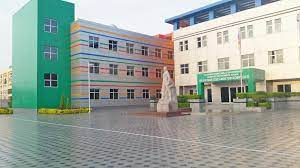

Bizim Lisey Kompleksimiz 📚📚📚
29 sentyabr 2010-cu ildə Biləsuvar şəhərindəki
Lisey- Məktəb Kompleksinə Azərbaycanın Milli
Qəhrəmanı Mübariz Ağakərim oğlu İbrahimovun adı
verilmişdir. Kompleksimiz 18 oktyabr 2010-cu ildən
fəaliyyət göstərir. Bu təhsil müəssisəsi öz fəaliy-
yətində şagirdlərə milli və bəşəri dəyərləri, vətən-
daşlıq şüurunu aşılamaq , hər şagirdin şəxsiyyətini
və yaradıcı potensialını inkişaf etdirmək, müstəqil
həyata hazır intellektuallar yetişdirmək , liderlik
keyfiyyətlərini təlqin etmək və s. kimi dəyərləri
əsas götürür.
